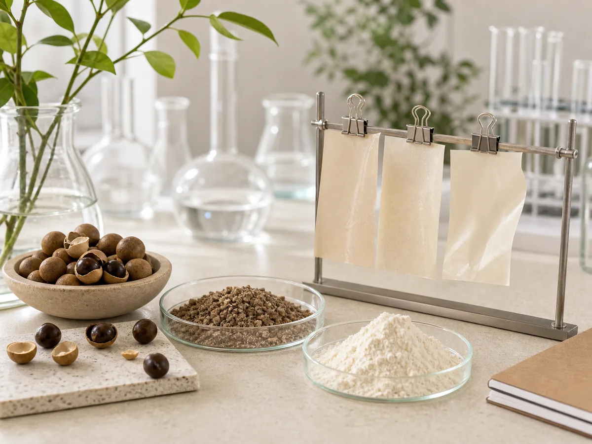

Thu nhận
Lựa chọn hạt nhãn từ nguồn phụ phẩm phù hợp.
Công nghệ vật liệu sinh học
The Green Seed công khai nguyên lý phát triển tổng quát nhưng giữ kín tỷ lệ phối trộn, thông số xử lý và các bước tối ưu mang tính bí quyết.
Quy trình tổng quát
Lựa chọn hạt nhãn từ nguồn phụ phẩm phù hợp.
Làm sạch, sấy và xử lý nguyên liệu đầu vào.
Nghiền và chuẩn hóa kích thước nguyên liệu.
Kết hợp với hệ vật liệu sinh học và chất hỗ trợ tạo màng.
Tạo mẫu, đánh giá và tiếp tục tối ưu đặc tính.
Bốn trụ cột nghiên cứu
Mẫu vật liệu cần được đánh giá về hiệu năng, yêu cầu tiếp xúc thực phẩm và khả năng sản xuất trước khi thương mại hóa.
Cần đánh giá điều kiện và tốc độ phân hủy bằng phương pháp thử phù hợp trước khi công bố.
Cần được kiểm nghiệm phù hợp trước khi đưa ra khẳng định về tiếp xúc thực phẩm.
Tối ưu độ bền, độ dẻo, khả năng tạo màng và trải nghiệm sử dụng thực tế.
Hướng tới quy trình có thể mở rộng và mức giá tiếp cận được thị trường.

Nghiên cứu nền tảng
Các công bố độc lập dưới đây giúp nhóm định hướng câu hỏi nghiên cứu. Chúng không chứng minh đặc tính của mẫu The Green Seed.
Một nghiên cứu đã tạo màng từ tinh bột hạt nhãn và anthocyanin, sau đó đánh giá các đặc tính trong điều kiện của nghiên cứu.
Xem nghiên cứu trên PubMedMột nghiên cứu khác khảo sát màng có thành phần từ hạt nhãn và polyphenol trà trên mô hình bảo quản táo cắt.
Xem nghiên cứu của ACSNghiên cứu Food Chemistry phân tích polyphenol được tách từ hạt nhãn và hoạt tính trong điều kiện phòng thí nghiệm.
Xem bài báo khoa họcCác nghiên cứu được trích dẫn là bằng chứng nền tảng về tiềm năng của nguyên liệu hạt nhãn. Chúng không phải kết quả kiểm nghiệm của sản phẩm The Green Seed.
Lộ trình kiểm chứng
Thông tin dưới đây phản ánh giai đoạn phát triển hiện tại của từng đặc tính.
| Đặc tính | Giai đoạn phát triển |
|---|---|
| Phân hủy sinh học | Đang tối ưu mẫu và chuẩn bị kiểm nghiệm phù hợp |
| Hạn chế vi nhựa | Đang đánh giá khả năng giảm phụ thuộc vào vật liệu nhựa truyền thống |
| Kháng khuẩn, chống oxy hóa | Đang nghiên cứu tiềm năng từ nguyên liệu và cần được xác nhận bằng thử nghiệm |
| An toàn thực phẩm | Đang xây dựng lộ trình kiểm nghiệm trước khi công bố khả năng sử dụng |